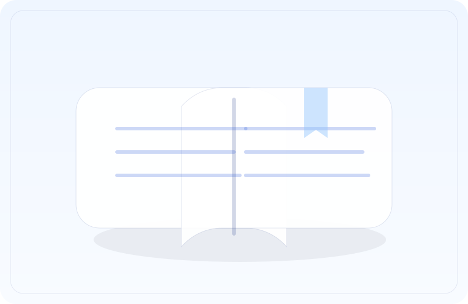

אודות

אתר זה נבנה בהתנדבות כספר זיכרון דיגיטלי — מקום שקט, נקי מפרסומות, שמכבד את הזיכרון.
הצהרת כוונות
המטרה היא ליצור מקום מרוכז, מכובד ונגיש לשמות, לקישורים ולסיפורים — כדי שנוכל לזכור יחד, בעדינות ובאחריות.
מקורות מידע
המידע נאסף ממקורות ציבוריים ורשמיים (למשל: אתרי מועצות/יישובים, אתרי ממשלה, ביטוח לאומי ואתרי חדשות). אם יש טעות או חוסר — נשמח לעדכן.
איך מוסיפים או מעדכנים דף
- תמונה באיכות גבוהה (רצוי מקורית/באישור משפחתי).
- תאריך לידה ותאריך נפילה/רצח (אם יש).
- סיפור קצר או כמה שורות על החיים והאדם.
- קישורים למקורות/כתבות/עמודי זיכרון.
- אישור מהמשפחה או מקור ציבורי ברור.
פנייה להוספה/עדכון
GitHub Pages לא כולל שרת, לכן הטופס שלהלן משתמש בשירות חיצוני (Formspree). החליפו את הכתובת ל-ID שלכם.